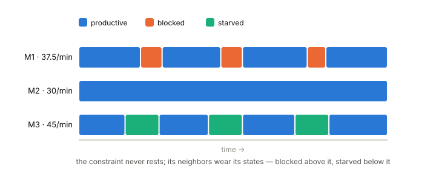

8 Interlude — The States of a Machine
Read after Lab 3, before Lab 4 · no Factorio required · ~25 minutes
You now own three system-level instruments: the constraint (Lab 2), the conservation ledger (Lab 3), and Little’s Law tying them together. What you cannot yet do is look at a single machine and say what its time went to. Lab 4 gives you that instrument. This interlude defines it carefully — because “how busy is this machine” is the most abused question in operations, and the abuse always hides in the definitions.
8.1 A taxonomy, not a feeling
At every moment, a measured machine is in exactly one activity: working or not working — decided by evidence (products finished, craft progress moving), not by appearance. When it is not working, the interesting question is the cause:
- starved — ready to work, but no material has arrived;
- blocked — work finished, but the output has nowhere to go;
- unavailable — the machine cannot run (no power, for instance);
- disabled — deliberately switched off;
- idle_other — none of the above; genuinely uncommitted time.
Two disciplines make this a measurement rather than a mood:
- Every second lands in exactly one state. The fractions over any window sum to one; nothing is double-counted, nothing vanishes.
- A gap in observation is never a state. If an interval couldn’t be classified, it is reported as coverage missing beside the numbers — it is not quietly assigned to “idle”, and it never shrinks a denominator. You are always told how much of the window the classification actually saw.
8.2 Denominators, again — and machines that come and go
A state fraction is time-in-state divided by — what, exactly? The default is the full measured window. But Lab 4’s toolbox lets you add and remove machines mid-run, and then the window is the wrong denominator for the newcomer: a machine built at minute 6 was not starved for the first six minutes, it was nonexistent.
FISL therefore tracks each machine’s eligibility: the span from when it joined the measured set to when it left. Per-machine fractions are reported against eligible time; pooled fractions sum only eligible machine-time. When you redesign the line mid-run in Lab 4, the report’s per-machine table will show exactly this — and a machine you removed will simply stop accumulating, rather than haunting the denominator.
8.3 Dependency: the constraint’s states are contagious
Here is the structural insight Lab 4 stages. In a line, the constraint is the one machine with no excess capacity — so it is the one machine that should never rest. Its neighbors have spare speed, and spare speed must show up somewhere: as waiting.

The direction is diagnostic, not decorative: blocking accumulates upstream of the constraint, starvation downstream. Waiting states point at the constraint like iron filings around a magnet. And the arithmetic from the capacity interlude sets the magnitudes, to first order: a machine of capacity in a line pacing at can be productive at most of the time. For the 37.5 / 30 / 45 line:
| machine | capacity | first-order productive fraction |
|---|---|---|
| M1 | 37.5/min | 30 / 37.5 = 80%, remainder mostly blocked |
| M2 | 30/min | ~100% — the constraint |
| M3 | 45/min | 30 / 45 ≈ 67%, remainder mostly starved |
Read the table twice, because it inverts the usual audit: the fastest machine looks the laziest, and the busiest-looking machine is the constraint. A manager rewarding “utilization” machine-by-machine punishes exactly the machines that are fine and flatters the one that limits the factory.
(First order is not exact: belts hold inventory and stagger the waiting, so measured fractions will land near these numbers, not on them. The deviation is itself data — Lab 4’s chapter takes it up.)
8.4 What a buffer really does
Put a chest between M1 and M2 and M1’s blocked time falls — the chest absorbs output that M2 isn’t ready for. No new capacity exists anywhere; throughput cannot move. The buffer converts one currency into another: waiting time into inventory. Whether that trade is ever worth making is a question this course finishes on (Lab 6) and its sequel begins with; for now it is enough to see that a buffer is a currency exchange, not a factory improvement.
8.5 Claims to carry into Lab 4
- The constraint’s productive fraction will be ~100%; M1 and M3 will land near 80% and 67% respectively — M1’s remainder mostly blocked, M3’s mostly starved. Write your three predictions down first.
- Ranking machines by productive fraction will identify the constraint without any capacity arithmetic — the diagnosis works even when the nameplates are hidden.
- Buffering above the constraint will cut M1’s blocked fraction and raise WIP, while throughput stays at 30/min exactly.
- Replacing a machine mid-run will show up in the report as two rows: the old machine’s eligibility ending, the new one’s beginning — and no fraction anywhere will use time outside its own machine’s eligibility.
8.6 Further reading
- Hopp & Spearman, Factory Physics (3rd ed.), ch. 8 “Variability Basics” — its blocking/starving treatment is stochastic where ours is deterministic; read it to see which conclusions survive when the craft times start to wobble.
- Goldratt & Cox, The Goal — Herbie, the hiking metaphor: dependency and the constraint’s states, in narrative form.
- The classification contract is FISL’s ADR 0007; eligibility and dynamic membership are ADR 0016.